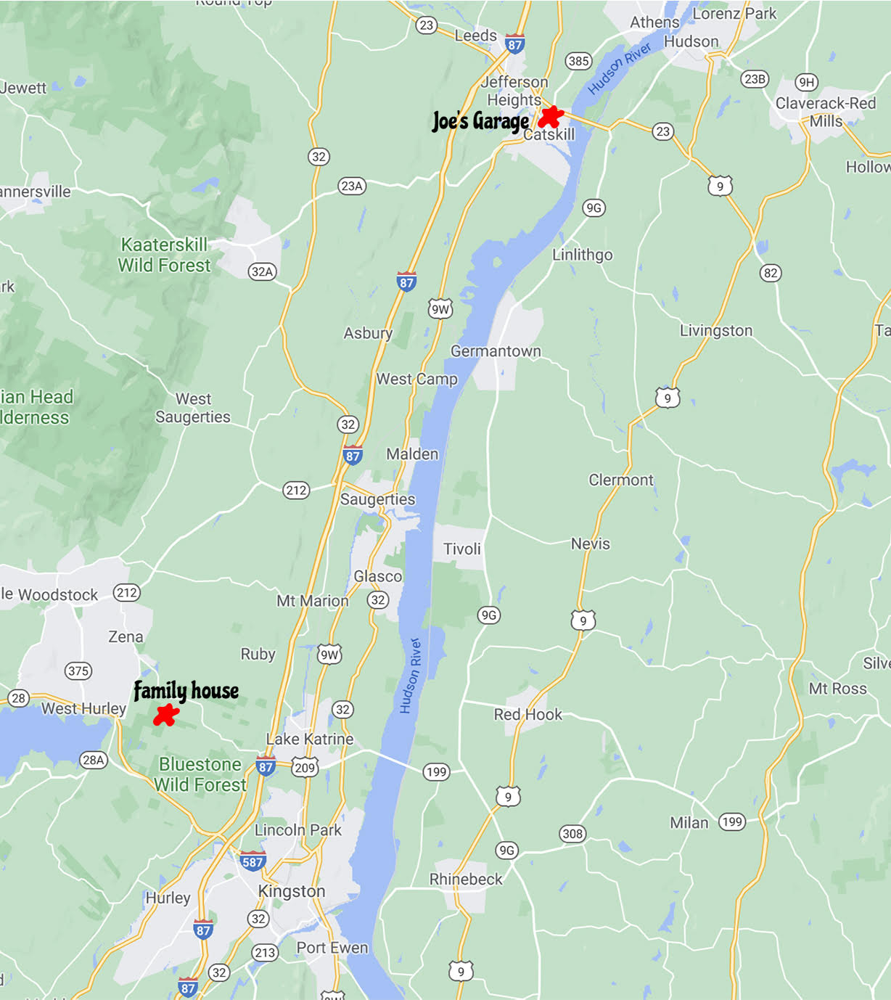

By plane: Albany International Airport is small, but the closest airport option to the area. The venue is a 2.5 hour drive from major NYC airports.
By train: Amtrak runs regular trains from Penn Station in Manhattan to Hudson. From the train station, it is a short walk into the town of Hudson, and a 10 minute taxi ride directly across the Hudson River to Catskill.
By car: The area is easily accessible by car. Uber/ Lyfts are available, but may be slow to arrive (we're rural!)
We suggest contacting these local taxi companies for rides:
Hudson Region Transport: (518) 547-7094
Warren Taxi: (518) 262-2613
We suggest that our guests book lodging as soon as possible, as the Hudson Valley is a popular destination on fall weekends!
1203 Glasco Turnpike
Saugerties, N.Y., 12477

Please wear whatever you'd like.